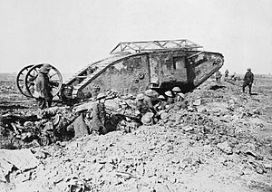
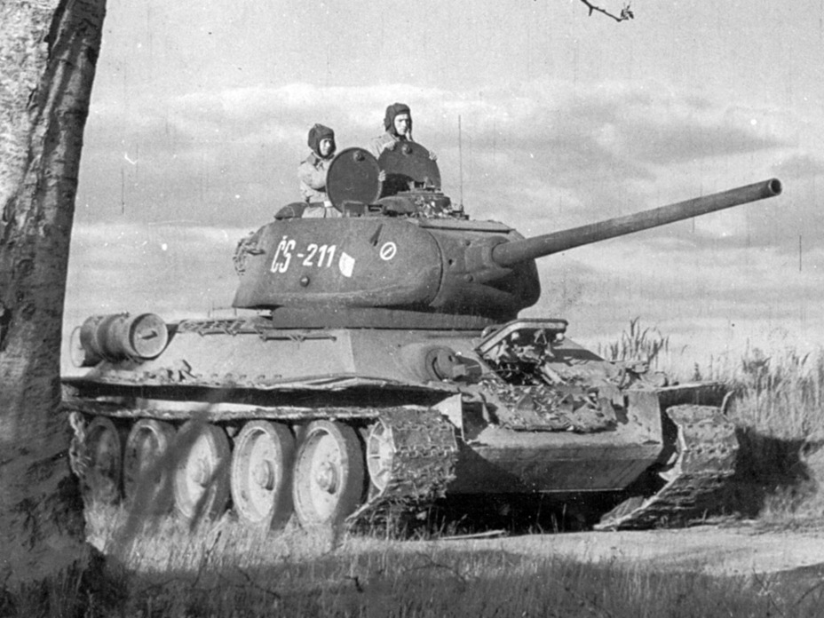
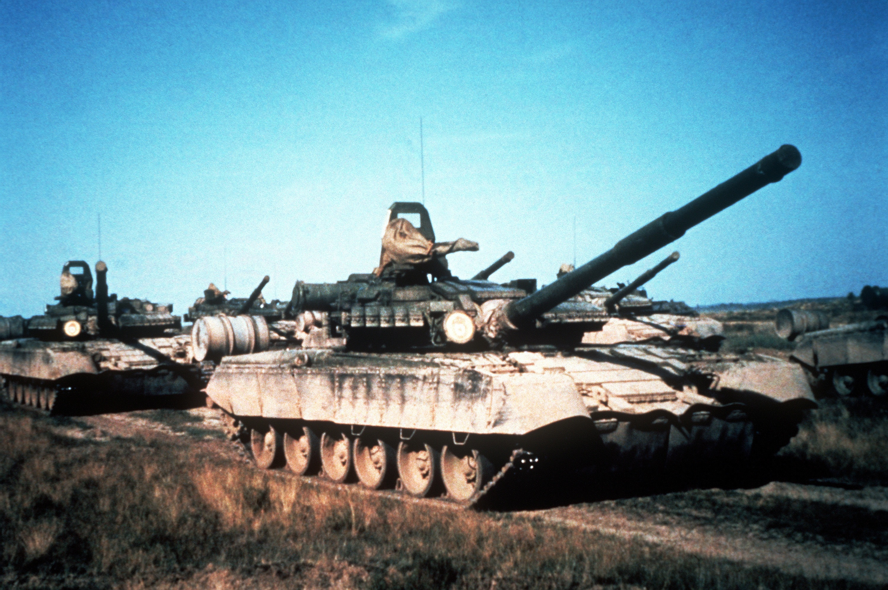

Spis treści:
Czołg Mark 1 przekraczajacy okop
1. I wojna światowa
Historia czołgów rozpoczyna się na początku XX wieku, podczas I wojny światowej. W tym czasie stratedzy wojskowi szukali nowych sposobów na przełamanie linii wroga i przełamanie impasu wojny okopowej. Jednym z rozwiązań był rozwój pojazdów opancerzonych, znanych jako "czołgi". Pierwsze czołgi zostały zaprojektowane i zbudowane w Wielkiej Brytanii w 1915 roku. Początkowo nazywano je "okrętami lądowymi" i były przeznaczone do poruszania się po polu bitwy i zapewnienia osłony oddziałom piechoty. Pierwsze czołgi były powolne, zawodne i podatne na awarie, ale okazały się skuteczne w przełamywaniu linii wroga. Podczas I wojny światowej czołgi nadal ewoluowały. Do końca wojny były szybsze, bardziej zwrotne i lepiej uzbrojone. Czołgi były wykorzystywane do różnych zadań, od przełamywania obrony wroga po wspieranie oddziałów piechoty.2. Dwudziestolecie międzywojenne
W okresie międzywojennym czołgi były nadal udoskonalane. Kraje na całym świecie zaczęły opracowywać własne czołgi, każdy o unikalnej konstrukcji i możliwościach. Szczególnie Niemcy stworzyli bardzo skuteczne siły czołgowe, które wykorzystali z wielkim powodzeniem podczas II wojny światowej.Wczesna czechosłowacka wersja czołgu T-34/85
3. II wojna światowa
Podczas II wojny światowej nastąpił znaczny postęp w dziedzinie czołgów. Czołgi stały się szybsze, lepiej opancerzone i potężniejsze. Niemcy opracowali koncepcję Blitzkriegu, która polegała na skoordynowanym użyciu czołgów, piechoty i samolotów w celu przełamania obrony przeciwnika. Taktyka ta okazała się bardzo skuteczna i Niemcy zdołali podbić znaczną część Europy, zanim zostali ostatecznie pokonani przez aliantów.Radzieckie T-80BW podczas manewrów